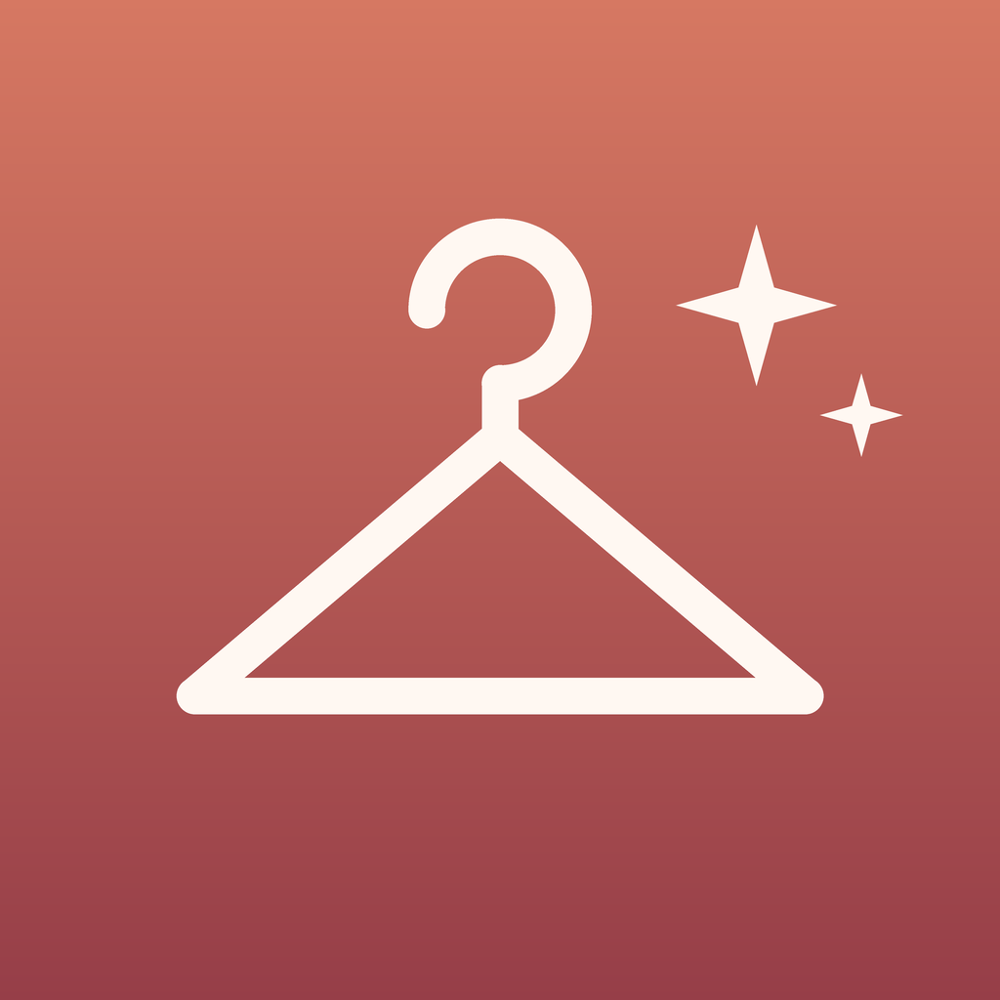

Style ScoutPrivacy Policy
Last updated: November 16, 2026
Style Scout is a personal tool used only by its owner. It is not offered to other users.
What it accesses
With the owner's permission, Style Scout reads the owner's own Pinterest boards and pins. It uses only the read-only scopes boards:read and pins:read.
What it stores
Pin images and basic pin details (pin ID, board, and date saved) are stored locally on the owner's own computer. They are used only to analyze the owner's style preferences.
Sharing
Pinterest data is not sold, shared or published. Style Scout doesn't post or change anything on Pinterest.
Deletion
The owner can delete all stored data at any time by deleting the local database. Style Scout's access can be revoked at any time in Pinterest settings.
Contact
Questions about this policy: emmkennelly.creator@gmail.com